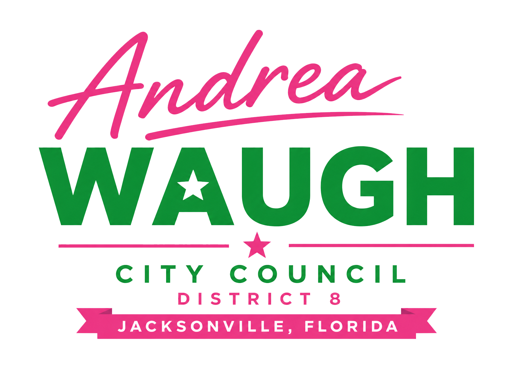
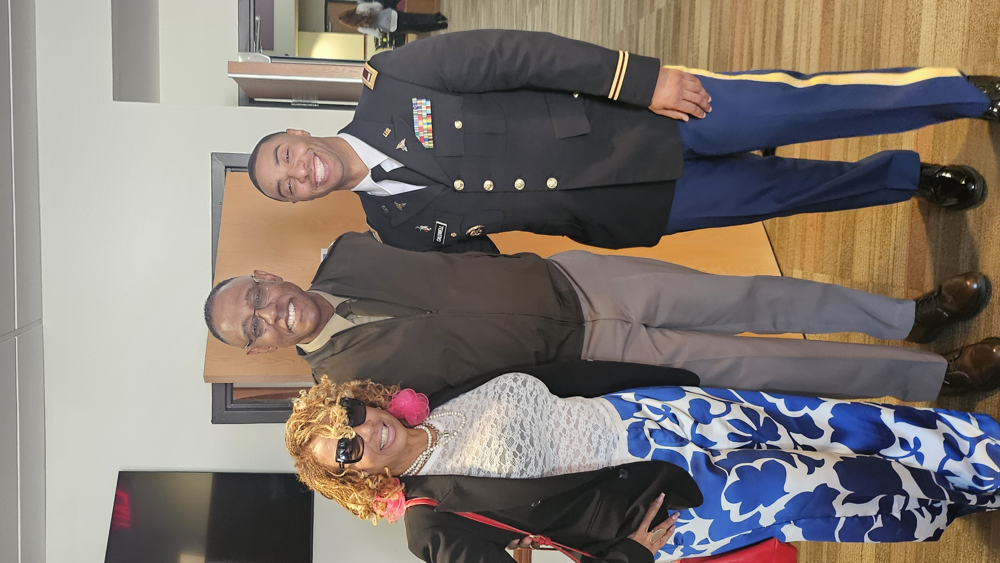
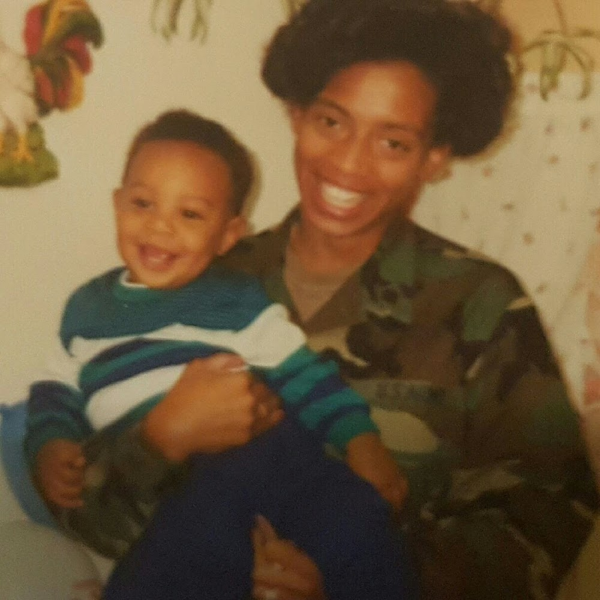
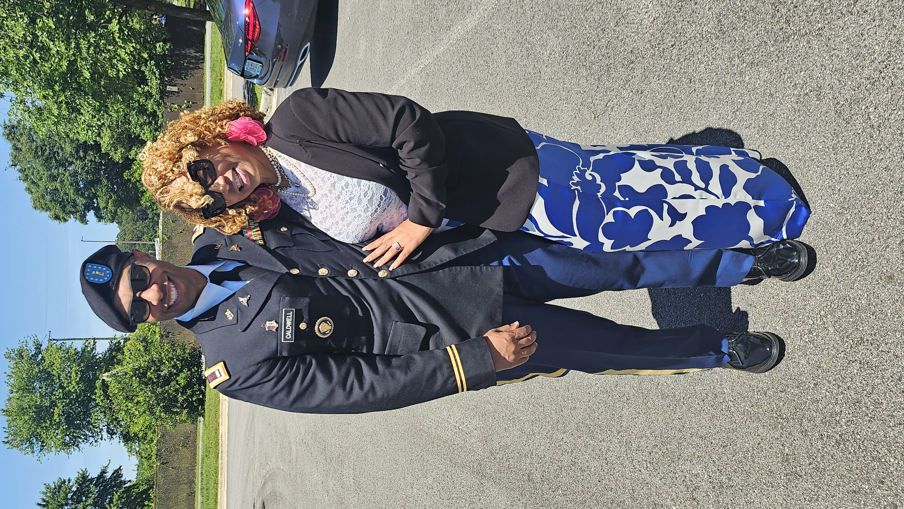
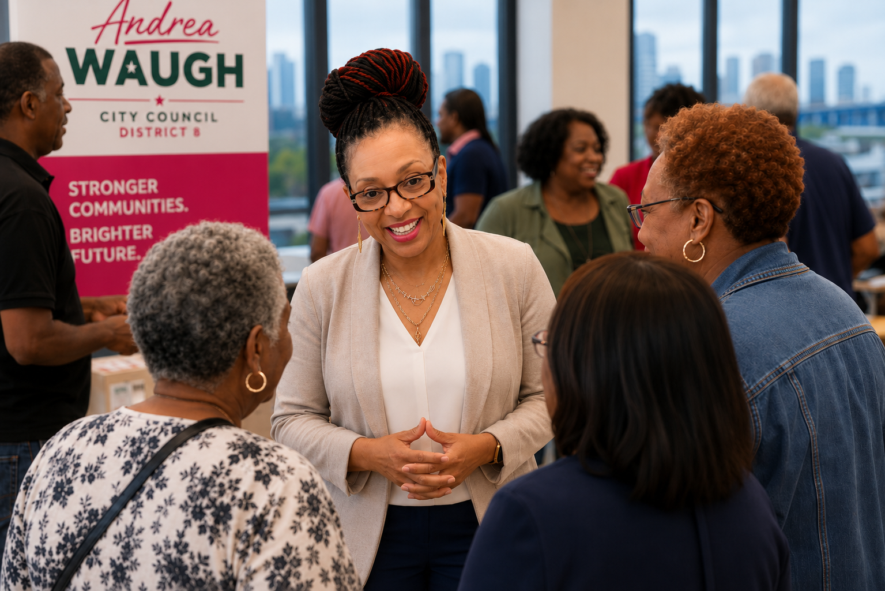

District 8 is my focus — fully, completely, and without distraction. I'm here to rally our community, listen deeply, and push for real action, not just talk.
Why I'm Running
District 8 is my focus — fully, completely, and without distraction. I don't have a side hustle, a nonprofit, or outside contracts pulling me away.
My commitment is here, with the people who call this district home. That means I can be present, available, and engaged in every conversation and every meeting that affects our neighborhoods.
My life has been shaped by service — from the U.S. Army to federal service with DOD, DOJ, and VBA. Those experiences taught me that real leadership isn't about showing up for a photo or checking a box. It's about rallying people, inspiring them, and standing shoulder-to-shoulder with them to fight for the resources and respect they deserve.
I'm not here to simply attend town halls. I'm here to help District 8 rise together — one band, one sound — and to make sure our community's needs are not just heard, but acted on.
"Leadership is showing up shoulder-to-shoulder with the people you serve."



A Legacy of Service
Service runs deep in my family. It shaped my values, my discipline, and my commitment to community. I am a proud U.S. Army veteran, and a proud mother of a U.S. Army officer currently serving our country. Serving stateside and overseas taught me the importance of responsibility, teamwork, and showing up for the people who depend on you.
- Elected HOA President in communities in both Georgia and Florida
- Selected out of 1,000 applicants to serve as Overseas Military Coordinator for Europe, representing the Veterans Benefits Administration
- Assisted veterans and military families with benefits, claims, and federal support
- Served with DOD, DOJ, and VBA, bringing discipline, accountability, and advocacy into every role
What Drives Me
- Accountability for Our Neighborhoods — Anyone who profits from District 8 should reinvest in District 8. That's real estate 101.
- Everyday Presence — Leadership is not seasonal. It's daily work, daily listening, daily showing up.
- Respect for Every Voice — Every resident deserves to be heard, acknowledged, and taken seriously — not just in select pockets, but across the entire district.
What I've Heard From the Community
I've listened to neighbors who feel overlooked and underserved. Many have shared that they're tired of leaders who talk but don't deliver — tired of seeing improvements only in certain areas while others wait for basic services.
They want streetlights fixed, parks maintained, code enforcement that actually enforces, and city services that respond when called.
"We want someone whose audio matches their video."
Someone who doesn't disappear after the meeting ends. Someone who stays, listens, and pushes for results — that will not sell us out for a few dollars, and that will ensure our entire district benefits, not just a few.

What I'll Do
My commitment is simple:
I will show up for you. I will listen to your concerns. I will advocate for you. I will negotiate on behalf of the entire District.
I believe in aligning words with action — putting the audio with the video. I will empower you to let your voice be heard and respected.
Our voice matters. You are worthy. Let's make sure City Hall hears you!
We don't need more meetings. We need movement. We need results. District 8 deserves someone who is present every day, not just during election season. Even when I'm outnumbered, I will negotiate, advocate, and push for what this community deserves.
We move forward together — one band, one sound.
Contact
Andrea
Have a question, idea, or want to get involved? Send a message and the campaign will be in touch.